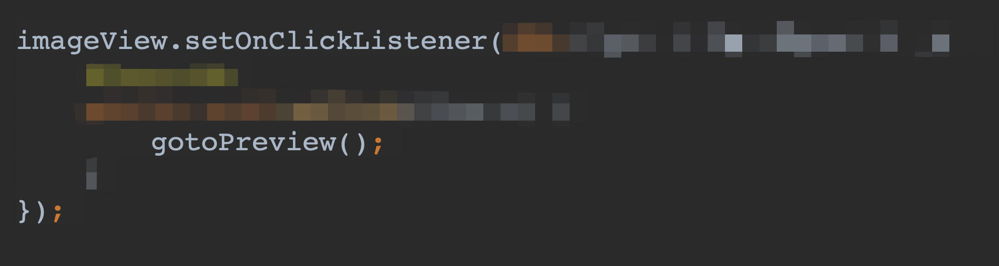
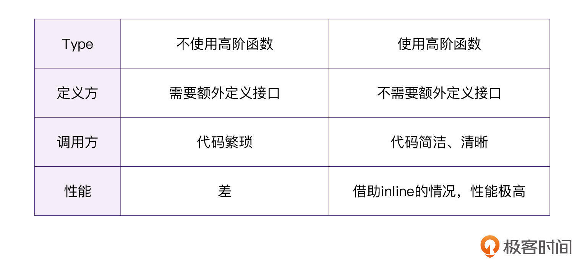
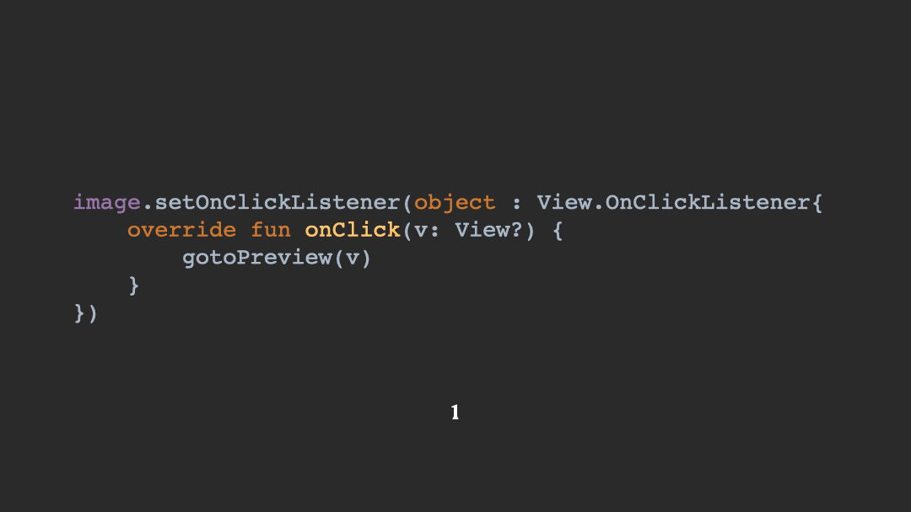
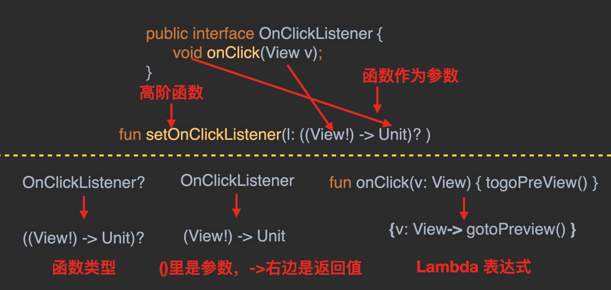
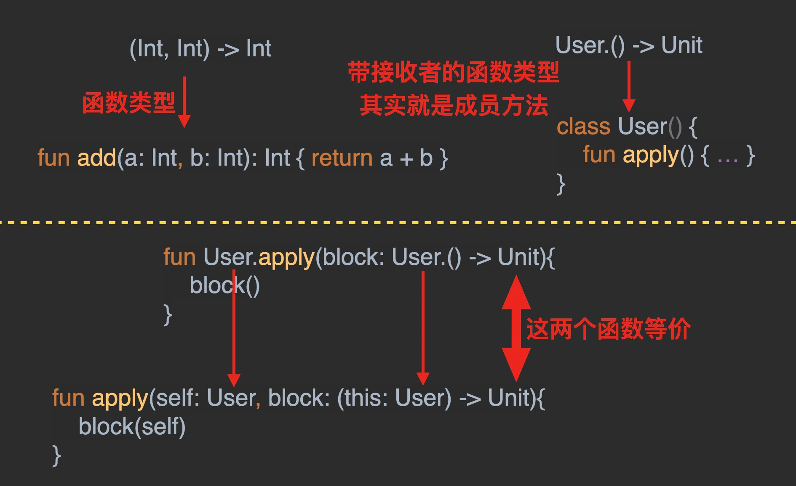
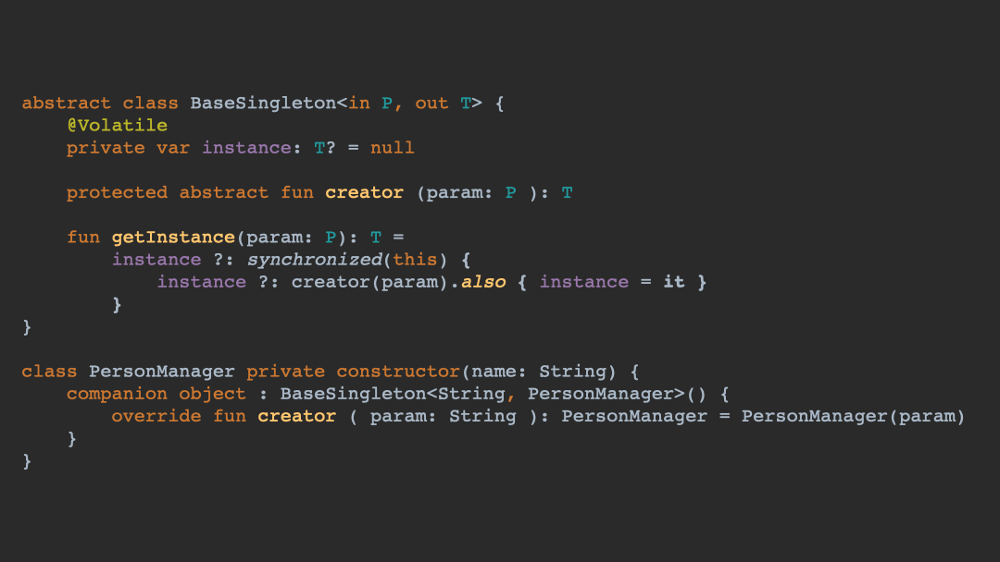
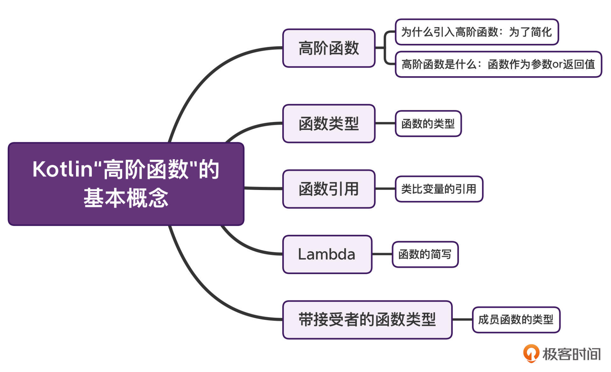

Audio高阶函数：为什么说函数是Kotlin的“一等公民”？
你好，我是朱涛。
高阶函数在 Kotlin 里有着举足轻重的地位。它是 Kotlin 函数式编程的基石，是各种框架的关键元素。高阶函数掌握好了，我们理解协程的 launch、async 函数就会轻松一些，阅读协程的源代码也会不那么吃力；高阶函数理解透彻了，我们学习 Jetpack Compose 也会得心应手，在特定业务场景下，我们甚至可以用它来实现自己的 DSL（Domain Specific Language）。
不过，如果你没有函数式编程的相关经验，在初次接触高阶函数的时候，很可能会被绕晕。因为它是一个全新的概念，你很难从经典的 C/Java 里找到同等的概念迁移过来（Java 从 1.8 开始才引入相关概念）。然而，对于高阶函数这么重要的概念，Kotlin 官方文档又惜字如金。
文档里只是突兀地介绍了高阶函数、函数类型、Lambda 表达式的简单用法，接着就丢出一段复杂的代码案例，然后丢出一个更复杂的概念，“带接收者的函数类型”（Function Types With Receiver），接着又丢出了一段更复杂的代码案例。说实话，这真的让人难以理解。
所以今天这节课，我会采用 Java 和 Kotlin 对照的方式，来给你讲解 Kotlin 高阶函数的核心概念。并且我会通过一个实际案例，来帮助你理解其中最晦涩难懂的“带接收者的函数类型”，为你今后的 Kotlin 学习之路打下坚实的基础。
Kotlin 为什么要引入高阶函数？
想要掌握好高阶函数，我们首先要知道，Kotlin 为什么要引入这一全新的概念。这个问题，Kotlin 官方并没有给出解释，但是我们很容易在它的使用上找到蛛丝马迹。
我们来看个实际的例子，这是 Android 中的 View 定义，这里我省略了大部分代码，主要是想带你来看看 Kotlin 高阶函数的一个典型使用场景。
补充：如果你不了解 Android 开发也没关系，Java Swing 中也有类似的代码模式。如果两者你都不熟悉，借助我提供的注释，也不难理解。
// View.java
// 成员变量
private OnClickListener mOnClickListener;
private OnContextClickListener mOnContextClickListener;
// 监听手指点击事件
public void setOnClickListener(OnClickListener l) {
mOnClickListener = l;
}
// 为传递这个点击事件，专门定义了一个接口
public interface OnClickListener {
void onClick(View v);
}
// 监听鼠标点击事件
public void setOnContextClickListener(OnContextClickListener l) {
getListenerInfo().mOnContextClickListener = l;
}
// 为传递这个鼠标点击事件，专门定义了一个接口
public interface OnContextClickListener {
boolean onContextClick(View v);
}这段代码，其实是一个典型的“可以用高阶函数来优化”的例子。让我们来看看它都做了什么：
首先，为了设置点击事件的监听，代码里特地定义了一个 OnClickListener 接口；
接着，为了设置鼠标点击事件的监听，又专门定义了一个 OnContextClickListener 接口。
乍一看，我们貌似是可以复用同一个接口就行了，对吧？但事实上，借助高阶函数，我们一个接口都不必定义。
当然了，上面的代码是 Android 团队十几年前用 Java 写的，在那个场景下，这么写代码是完全没问题的。可是这段代码在使用的时候，问题更大。比如，我们可以来看看如下所示的 Android 里设置点击监听的代码：
// 设置手指点击事件
image.setOnClickListener(new View.OnClickListener() {
@Override
public void onClick(View v) {
gotoPreview();
}
});
// 设置鼠标点击事件
image.setOnContextClickListener(new View.OnContextClickListener() {
@Override
public void onContextClick(View v) {
gotoPreview();
}
});看完了这两段代码之后，你有没有觉得这样的代码会很啰嗦？因为，真正逻辑只有一行代码：gotoPreview()，而实际上我们却写了 6 行代码。

如果我们将其中的核心逻辑提取出来，会发现这样才是最简单明了的：
// { gotoPreview() } 就是 Lambda
// ↑
image.setOnClickListener({ gotoPreview() })
image.setOnContextClickListener({ gotoPreview() })那么，Kotlin 语言的设计者是怎么做的呢？实际上他们是分成了两个部分：
用函数类型替代接口定义；
用 Lambda 表达式作为函数参数。
这里我们再来看看与前面 View.java 的等价 Kotlin 代码：
//View.kt
// (View) -> Unit 就是「函数类型 」
// ↑ ↑
var mOnClickListener: ((View) -> Unit)? = null
var mOnContextClickListener: ((View) -> Unit)? = null
// 高阶函数
fun setOnClickListener(l: (View) -> Unit) {
mOnClickListener = l;
}
// 高阶函数
fun setOnContextClickListener(l: (View) -> Unit) {
mOnContextClickListener = l;
}那么通过对比，我们能看到，Kotlin 中引入高阶函数会带来几个好处：一个是针对定义方，代码中减少了两个接口类的定义；另一个是对于调用方来说，代码也会更加简洁。这样一来，就大大减少了代码量，提高了代码可读性，并通过减少类的数量，提高了代码的性能。

注：关于“inline”，我会在下节课中详细介绍。
通过上面的例子，我们已经清楚高阶函数存在的意义和价值了。不过，前面出现的一些新的概念我们还没来得及详细解释，比如，函数类型、Lambda，它们到底是什么呢？还有高阶函数的具体定义是什么呢？
接下来，我会通过一个具体的代码案例，来给你一一解读与高阶函数关系密切的概念及使用定义，让你能进一步夯实函数式编程的基础知识。
理解高阶函数的相关概念
首先，我们来了解下什么是函数类型。
函数类型
顾名思义，函数类型（Function Type）就是函数的类型。如果你之前没有函数式编程的经验，刚接触这个概念的话也许会觉得奇怪：函数也有类型吗？
// (Int, Int) ->Float 这就是 add 函数的类型
// ↑ ↑ ↑
fun add(a: Int, b: Int): Float { return (a+b).toFloat() }请注意这里我给出代码注释，第二行注释里面的“↑”代表的是一种映射关系。其实，将第三行代码里的“Int Int Float”抽出来，就代表了该函数的类型。
我们可以用更精练的语言来描述函数类型的规律：将函数的“参数类型”和“返回值类型”抽象出来后，就得到了“函数类型”。(Int, Int) ->Float 就代表了参数类型是两个 Int，返回值类型为 Float 的函数类型。
理解了函数类型以后，我们再来看函数的引用。普通的变量也有引用的概念，我们可以将一个变量赋值给另一个变量。而这一点，在函数上也是同样适用的，函数也有引用，并且也可以赋值给变量。
// 函数赋值给变量 函数引用
// ↑ ↑
val function: (Int, Int) -> Float = ::add高阶函数
好，接着我们再来看看高阶函数的具体定义。当然，前面解释了这么多，现在我们对高阶函数应该已经有了比较清晰的认识了，我们用 Kotlin 实现的 View 点击事件函数，它就是一个高阶函数。
而它明确的定义其实是这样的：高阶函数是将函数用作参数或返回值的函数。
这句话有点绕，我们还是直接看例子吧。如果我们将 Android 里点击事件的监听用 Kotlin 来实现的话，它其实就是一个典型的高阶函数。
// 函数作为参数的高阶函数
// ↓
fun setOnClickListener(l: (View) -> Unit) { ... }换句话说，一个函数的参数或是返回值，它们当中有一个是函数的情况下，这个函数就是高阶函数。
Lambda
而前面我们还提到过，Kotlin 语言的设计者是用 Lambda 表达式作为函数参数的，那么这里的 Lambda，就可以理解为是函数的简写：
fun onClick(v: View): Unit { ... }
setOnClickListener(::onClick)
// 用 Lambda 表达式来替代函数引用
setOnClickListener({v: View -> ...})那么，如果你够细心的话，可能已经发现了一个问题：Android 并没有提供 View.java 的 Kotlin 实现，那么为什么我们的 Demo 里面可以用 Lambda 来简化事件监听呢？
// 在实际开发中，我们经常使用这种简化方式
setOnClickListener({ gotoPreview() }原因是这样的，由于 OnClickListener 符合 SAM 转换的要求，因此编译器自动帮我们做了一层转换，让我们可以用 Lambda 表达式来简化我们的函数调用。
那么，SAM 又是个什么鬼？
SAM 转换
SAM 是 Single Abstract Method 的缩写，意思就是只有一个抽象方法的类或者接口。但在 Kotlin 和 Java 8 里，SAM 代表着只有一个抽象方法的接口。只要是符合 SAM 要求的接口，编译器就能进行 SAM 转换，也就是我们可以使用 Lambda 表达式，来简写接口类的参数。
注意，Java 8 中的 SAM 有明确的名称，叫做函数式接口（FunctionalInterface）。FunctionalInterface 的限制如下，缺一不可：
必须是接口，抽象类不行；
该接口有且仅有一个抽象的方法，抽象方法个数必须是 1，默认实现的方法可以有多个。
也就是说，对于 View.java 来说，它虽然是 Java 代码，但 Kotlin 编译器知道它的参数 OnClickListener 符合 SAM 转换的条件，所以会自动做以下转换。
转换前：
public void setOnClickListener(OnClickListener l)转换后：
fun setOnClickListener(l: (View) -> Unit)
// 实际上是这样：
fun setOnClickListener(l: ((View!) -> Unit)?)其中，((View!) -> Unit)? 代表的是这个参数可能为空。
Lambda 表达式引发的 8 种写法
当一个函数的参数是 SAM 的情况下，我们同样也可以使用 Lambda 作为参数。所以，我们既可以用匿名内部类的方式传参，也可以使用 Lambda 的方式传参。这两种方式在我们前面都已经提到过了。然而，在这两种写法的中间，还有 6 种“过渡状态”的写法。这对大部分初学者简直是噩梦：同样的代码，能有 8 种不同的写法，确实也挺懵的。
而要理解 Lambda 表达式的简写逻辑，其实很简单，那就是：多写。你也可以跟着我接下来的流程来一起写一写。
第 1 种写法
这是原始代码，它的本质是用 object 关键字定义了一个匿名内部类：
image.setOnClickListener(object: View.OnClickListener {
override fun onClick(v: View?) {
gotoPreview(v)
}
})第 2 种写法
在这种情况下，object 关键字可以被省略。这时候它在语法层面就不再是匿名内部类了，它更像是 Lambda 表达式了，因此它里面 override 的方法也要跟着删掉：
image.setOnClickListener(View.OnClickListener { v: View? ->
gotoPreview(v)
})上面的View.OnClickListener被称为 SAM Constructor（SAM 构造器），它是编译器为我们生成的。
第 3 种写法
由于 Kotlin 的 Lambda 表达式是不需要 SAM Constructor 的，所以它也可以被删掉：
image.setOnClickListener({ v: View? ->
gotoPreview(v)
})第 4 种写法
由于 Kotlin 支持类型推导，所以 View 可以被删掉：
image.setOnClickListener({ v ->
gotoPreview(v)
})第 5 种写法
当 Kotlin Lambda 表达式只有一个参数的时候，它可以被写成 it：
image.setOnClickListener({ it ->
gotoPreview(it)
})第 6 种写法
Kotlin Lambda 的 it 是可以被省略的：
image.setOnClickListener({
gotoPreview(it)
})第 7 种写法
当 Kotlin Lambda 作为函数的最后一个参数时，Lambda 可以被挪到外面：
image.setOnClickListener() {
gotoPreview(it)
}第 8 种写法
当 Kotlin 只有一个 Lambda 作为函数参数时，() 可以被省略：
image.setOnClickListener {
gotoPreview(it)
}这里，我把这 8 种写法的演进过程以动图的形式展现了出来，让你对 Lambda 这几种写法的差异有一个更加直观的认识。

按照这个流程，在 IDE 里多写几遍，你自然就会理解了。一定要写，光看是记不住的。
好了，到这里，你就搞明白这些概念是什么意思了。下面我们来做一个小的总结，在后续的 Kotlin 学习当中，这些都是要铭记在心的。
将函数的参数类型和返回值类型抽象出来后，我们就得到了函数类型。比如(View) -> Unit 就代表了参数类型是 View，返回值类型为 Unit 的函数类型。
如果一个函数的“参数”或者“返回值”的类型是函数类型，那这个函数就是高阶函数。很明显，我们刚刚就写了一个高阶函数，只是它比较简单而已。
Lambda 就是函数的一种简写。
然后，你也可以再通过一张图来回顾下函数类型、高阶函数以及 Lambda 表达式三者之间的关系：

你也可以再回过头来看看官方文档提供的例子：
fun <T, R> Collection<T>.fold(
initial: R,
combine: (acc: R, nextElement: T) -> R
): R {
var accumulator: R = initial
for (element: T in this) {
accumulator = combine(accumulator, element)
}
return accumulator
}你看到这个函数类型：(acc: R, nextElement: T) -> R，是不是瞬间就懂了呢？这个函数接收了两个参数，第一个参数类型是 R，第二个参数是 T，函数的返回类型是 R。
难点：带接收者的函数类型
那么现在，我们就把高阶函数这个知识点理解得有 80% 了。而在这节课一开始，我还提到，在 Kotlin 的函数类型这个知识点当中，还有一个特殊的概念，叫做带接收者的函数类型，它尤其晦涩难懂。
说实话，这个名字也对初学者不太友好，“带接收者的函数类型”，这里面的每一个字我都认识，可放到一块我就懵了。所以我们其实还是绕不开一个问题：为什么？
为什么要引入带接收者的函数类型？
这里，让我们先来看一下 Kotlin 的标准函数 apply 的使用场景。
不用 apply：
if (user != null) {
...
username.text = user.name
website.text = user.blog
image.setOnClickListener { gotoImagePreviewActivity(user) }
}使用 apply：
user?.apply {
...
username.text = name
website.text = blog
image.setOnClickListener { gotoImagePreviewActivity(this) }
}请问这个 apply 方法应该怎么实现呢？
上面的写法其实是简化后的 Lambda 表达式，让我们来反推一下，看看它简化前是什么样的：
// apply 肯定是个函数，所以有 ()，只是被省略了
user?.apply() {
...
}
// Lambda 肯定是在 () 里面
user?.apply({ ... })
// 由于 gotoImagePreviewActivity(this) 里的 this 代表了 user
// 所以 user 应该是 apply 函数的一个参数，而且参数名为：this
user?.apply({ this: User -> ... })所以，现在问题非常明确了，apply 其实是接收了一个 Lambda 表达式：{ this: User -> ... }。那么现在，我们就尝试来实现这个 apply 方法：
fun User.apply(self: User, block: (self: User) -> Unit): User{
block(self)
return this
}
user?.apply(self = user) { self: User ->
username.text = self.name
website.text = self.blog
image.setOnClickListener { gotoImagePreviewActivity(this) }
}由于 Kotlin 里面的函数形参是不允许被命名为 this 的，因此我这里用的是 self。另外，这里我们自己写出来的 apply，仍然还要通过 self.name 这样的方式来访问成员变量，但 Kotlin 的语言设计者能做到这样：
// 改为this 改为this
// ↓ ↓
fun User.apply(this: User, block: (this: User) -> Unit): User{
// 这里还要传参数
// ↓
block(this)
return this
}
user?.apply(this = user) { this: User ->
...
// this 可以省略
// ↓
username.text = this.name
website.text = blog
image.setOnClickListener { gotoImagePreviewActivity(this) }
}从上面的例子能看到，我们反推的 apply 实现会比较繁琐：
需要我们传入 this：user?.apply(this = user)。
需要我们自己调用：block(this)。
因此，Kotlin 就引入了带接收者的函数类型，可以简化 apply 的定义：
// 带接收者的函数类型
// ↓
fun User.apply(block: User.() -> Unit): User{
// 不用再传this
// ↓
block()
return this
}
user?.apply { this: User ->
// this 可以省略
// ↓
username.text = this.name
website.text = this.blog
image.setOnClickListener { gotoImagePreviewActivity(this) }
}现在，关键来了。上面的 apply 方法是不是看起来就像是在 User 里，增加了一个成员方法 apply()？
class User() {
val name: String = ""
val blog: String = ""
fun apply() {
// 成员方法可以通过 this 访问成员变量
username.text = this.name
website.text = this.blog
image.setOnClickListener { gotoImagePreviewActivity(this) }
}
}所以，从外表上看，带接收者的函数类型，就等价于成员方法。但从本质上讲，它仍是通过编译器注入 this 来实现的。
我们可以再通过一张图，来理解下什么是带接收者的函数类型：

看到这里，也许你会想起前面我们讲过的“扩展函数”。那么，带接收者的函数类型，是否也能代表扩展函数呢？
答案是肯定的。毕竟，从语法层面讲，扩展函数就相当于成员函数。
实战与思考
我们的抽象类模板 BaseSingleton 是否还有改进的空间？
这里，让我们先回顾一下 BaseSingleton 的代码：
abstract class BaseSingleton<in P, out T> {
@Volatile
private var instance: T? = null
// ①
// ↓
protected abstract fun creator(param: P): T
fun getInstance(param: P): T =
instance ?: synchronized(this) {
instance ?: creator(param).also { instance = it }
}
}
class PersonManager private constructor(name: String) {
companion object : BaseSingleton<String, PersonManager>() {
override fun creator(param: String): PersonManager = PersonManager(param)
}
}从上面的代码我们可以看到，BaseSingleton 是单例抽象模板，而 PersonManager 则是实际的单例类。
在前面的第 2 讲里，我们就讨论过 Person 的 isAdult 应该是属性，而 walk 则应该是方法。那么现在，请看注释①，它是我们定义的一个抽象方法，名字叫做 creator。这时候，相信你马上就能反应过来：creator 应该定义成属性。
可是，如何才能将一个方法改成属性呢？答案当然就是刚学过的：高阶函数。
运用这节课学到的知识，我们很容易就能将 creator 改成一个类型为：(P)->T的属性，如下所示：
abstract class BaseSingleton<in P, out T> {
@Volatile
private var instance: T? = null
// 变化在这里，函数类型的属性
// ↓ ↓
protected abstract val creator: (P)-> T
fun getInstance(param: P): T =
instance ?: synchronized(this) {
instance ?: creator(param).also { instance = it }
}
}上面的代码中，我们将 creator 改成了一个抽象的属性，如果其他的单例类继承了 BaseSingleton 这个类，就必须实现这个 creator 属性。不过，这时候一个问题就出现了：PersonManager 该怎么写呢？
如果我们依葫芦画瓢，在实现 creator 的时候传入 PersonManager 的构造函数，会发现代码报错：类型不匹配。
class PersonManager private constructor(name: String) {
companion object : BaseSingleton<String, PersonManager>() {
// 报错，类型不匹配
// ↓
override val creator = PersonManager(name)
}
}这段代码报错的原因其实也很简单，creator 的类型是一个 (String)-> PersonManager，而 PersonManager 构造函数这个表达式的值类型，是 PersonManager 类型。前者是函数类型，后者是普通对象类型。那么，如何才能正确实现 creator 这个函数类型的属性呢？
答案就是我们前面刚学的：函数引用！
class PersonManager private constructor(name: String) {
companion object : BaseSingleton<String, PersonManager>() {
// 函数引用
// ↓
override val creator = ::PersonManager
}
}从上面的代码中可以看到，我们直接将 PersonManager 的构造函数，以函数引用的方式传给了 creator 这个属性，这样就成功地实现了这个函数类型的属性。
在这个案例里，我们将函数引用以及高阶函数应用到了单例抽象类模板当中，而在这个过程当中，我们也就能更加透彻地理解这两个特性的使用场景了。
这里我制作了一个代码的转换动图，帮你建立一个更加直观的认识。

从这个动图里，我们可以清晰地看到某些元素的转移过程。比如泛型 P、T，还有 PersonManager 的构造函数，这些都是代码中的关键元素。这些关键元素只是换了一种语法排列规则：从函数的语法变成了属性的语法，语法从复杂变得简洁，其中的关键元素并未丢失。
因此，这两种代码是完全等价的，但后者更加简洁易懂。
小结
到现在为止，咱们高阶函数部分的内容就进入尾声了。让我们再来做一次总结：
为什么引入高阶函数？答：为了简化。
高阶函数是什么？答：函数作为参数 or 返回值。
函数类型是什么？答：函数的类型。
函数引用是什么？答：类比变量的引用。
Lambda 是什么？答：可以简单理解为“函数的简写”（官方定义我们以后再讨论）。
带接收者的函数类型是什么？答：可以简单理解为“成员函数的类型”。

事实上，对于初学者来说，要一下子理解并掌握 Kotlin“高阶函数”不是一件容易的事情。在掌握好这节课内容的基础上，我们可以尝试去读一些优秀的代码。
比如 Kotlin 官方的源代码StandardKt，你可以去分析其中的 with、let、also、takeIf、repeat、apply，来进一步加深对高阶函数的理解。还有就是CollectionsKt，你可以去分析其中的 map、flatMap、fold、groupBy 等操作符，从而对高阶函数的应用场景有一个更具体的认知。
另外，在第2 讲的时候，我们曾经提到过：理论上讲，Kotlin 与 Java 是完全兼容的。那么问题来了，Kotlin 引入全新的高阶函数，最终变成 JVM 字节码后是怎么执行呢？毕竟，JVM 可不知道什么是高阶函数啊。
答案其实也很简单：匿名内部类。
而这样又引出了另一个问题：所以 Kotlin 弄了个这么高端的高阶函数，最终还是以匿名内部类的形式在运行呗？那它们两者的性能差不多？这不是多此一举吗？
答案当然是否定的，Kotlin 高阶函数的性能，在极端情况下可以达到匿名内部类的 100 倍！具体是怎么回事儿呢？别着急，下节课讲“inline”时，我们就会来详细探讨。
小作业
public inline fun <R> run(block: () -> R): R {
contract {
callsInPlace(block, InvocationKind.EXACTLY_ONCE)
}
return block()
}
public inline fun <T, R> T.run(block: T.() -> R): R {
contract {
callsInPlace(block, InvocationKind.EXACTLY_ONCE)
}
return block()
}
public inline fun <T, R> with(receiver: T, block: T.() -> R): R {
contract {
callsInPlace(block, InvocationKind.EXACTLY_ONCE)
}
return receiver.block()
}
public inline fun <T> T.apply(block: T.() -> Unit): T {
contract {
callsInPlace(block, InvocationKind.EXACTLY_ONCE)
}
block()
return this
}
public inline fun <T> T.also(block: (T) -> Unit): T {
contract {
callsInPlace(block, InvocationKind.EXACTLY_ONCE)
}
block(this)
return this
}
public inline fun <T, R> T.let(block: (T) -> R): R {
contract {
callsInPlace(block, InvocationKind.EXACTLY_ONCE)
}
return block(this)
}
public inline fun <T> T.takeIf(predicate: (T) -> Boolean): T? {
contract {
callsInPlace(predicate, InvocationKind.EXACTLY_ONCE)
}
return if (predicate(this)) this else null
}
public inline fun <T> T.takeUnless(predicate: (T) -> Boolean): T? {
contract {
callsInPlace(predicate, InvocationKind.EXACTLY_ONCE)
}
return if (!predicate(this)) this else null
}
public inline fun repeat(times: Int, action: (Int) -> Unit) {
contract { callsInPlace(action) }
for (index in 0 until times) {
action(index)
}
}好了，这节课就到这里，如果觉得有收获，非常欢迎你把今天的内容分享给更多的朋友，咱们下节课再见。
COMMUNITY NOTES
读者评论
这篇文章暂时没有读者留言。